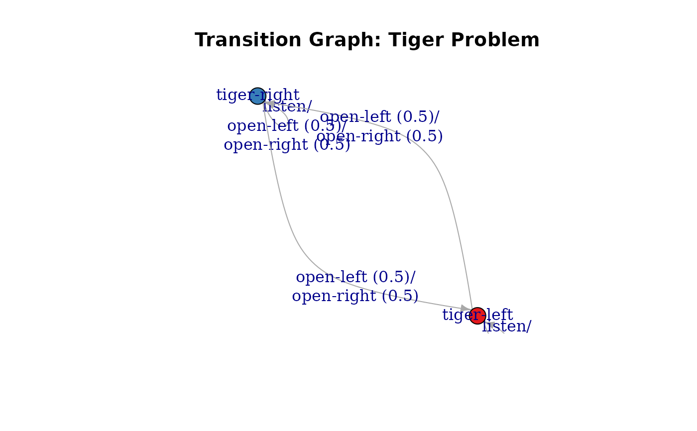

Access to Parts of the Model Description
Source:R/accessors.R, R/accessors_reward.R, R/accessors_trans_obs.R
accessors.RdFunctions to provide uniform access to different parts of the POMDP/MDP problem description.
Usage
start_vector(x)
normalize_POMDP(
x,
sparse = TRUE,
trans_start = FALSE,
trans_function = TRUE,
trans_keyword = FALSE
)
normalize_MDP(
x,
sparse = TRUE,
trans_start = FALSE,
trans_function = TRUE,
trans_keyword = FALSE
)
reward_matrix(
x,
action = NULL,
start.state = NULL,
end.state = NULL,
observation = NULL,
episode = NULL,
epoch = NULL,
sparse = FALSE,
drop = TRUE
)
reward_val(
x,
action,
start.state,
end.state = NULL,
observation = NULL,
episode = NULL,
epoch = NULL
)
transition_matrix(
x,
action = NULL,
start.state = NULL,
end.state = NULL,
episode = NULL,
epoch = NULL,
sparse = FALSE,
trans_keyword = TRUE,
drop = TRUE
)
transition_val(x, action, start.state, end.state, episode = NULL, epoch = NULL)
observation_matrix(
x,
action = NULL,
end.state = NULL,
observation = NULL,
episode = NULL,
epoch = NULL,
sparse = FALSE,
trans_keyword = TRUE,
drop = TRUE
)
observation_val(
x,
action,
end.state,
observation,
episode = NULL,
epoch = NULL
)Arguments
- x
- sparse
logical; use sparse matrices when the density is below 50% and keeps data.frame representation for the reward field.
NULLreturns the representation stored in the problem description which saves the time for conversion.- trans_start
logical; expand the start to a probability vector?
- trans_function
logical; convert functions into matrices?
- trans_keyword
logical; convert distribution keywords (uniform and identity) in
transition_proborobservation_probto matrices?- action
name or index of an action.
- start.state, end.state
name or index of the state.
- observation
name or index of observation.
- episode, epoch
Episode or epoch used for time-dependent POMDPs. Epochs are internally converted to the episode using the model horizon.
- drop
logical; simplify a selection to a vector or scalar. Use
drop = FALSEto preserve matrix dimensions.
Details
Several parts of the POMDP/MDP description can be defined in different ways. In particular,
the fields transition_prob, observation_prob, reward, and start can be defined using matrices, data frames,
keywords, or functions. See POMDP for details. The functions provided here offer unified access to the data in these fields
to make writing code easier.
Transition Probabilities \(T(s'|s,a)\)
transition_matrix() accesses the transition model. The complete model
is a list with one element for each action. Each element contains a states x states matrix
with \(s\) (start.state) as rows and \(s'\) (end.state) as columns.
Matrices with a density below 50% can be requested in sparse format
(as a Matrix::dgCMatrix).
Observation Probabilities \(O(o|s',a)\)
observation_matrix() accesses the observation model. The complete model is a
list with one element for each action. Each element contains a states x observations matrix
with \(s\) (start.state) as rows and \(o\) (observation) as columns.
Matrices with a density below 50% can be requested in sparse format
(as a Matrix::dgCMatrix)
Reward \(R(s,s',o,a)\)
reward_matrix() accesses the reward model.
The preferred representation is a data.frame with the
columns action, start.state, end.state,
observation, and value. This is a sparse representation.
The dense representation is a list of lists of matrices.
The list levels are \(a\) (action) and \(s\) (start.state).
The matrices have rows representing \(s'\) (end.state)
and columns representing \(o\) (observations).
The reward structure cannot be efficiently stored using a standard sparse matrix
since there might be a fixed cost for each action
resulting in no entries with 0.
Initial Belief
start_vector() translates the initial probability vector description into a numeric vector.
Deprecated scalar accessors
transition_val(), observation_val(), and reward_val() are deprecated.
Use the corresponding *_matrix() accessor with the same selection arguments
and drop = TRUE instead.
Convert the Complete POMDP Description into a consistent form
normalize_POMDP() returns a new POMDP definition where transition_prob,
observations_prob, reward, and start are normalized.
Also, states, actions, and observations are ordered as given in the problem
definition to make safe access using numerical indices possible. Normalized POMDP descriptions can be
used in custom code that expects consistently a certain format.
See also
Other POMDP:
MDP2POMDP,
POMDP(),
actions(),
add_policy(),
plot_belief_space(),
projection(),
reachable_and_absorbing,
regret(),
sample_belief_space(),
simulate_POMDP(),
solve_POMDP(),
solve_SARSOP(),
transition_graph(),
update_belief(),
value_function(),
write_POMDP()
Other MDP:
MDP(),
MDP2POMDP,
MDP_policy_functions,
actions(),
add_policy(),
gridworld,
reachable_and_absorbing,
regret(),
simulate_MDP(),
solve_MDP(),
transition_graph(),
value_function()
Examples
data("Tiger")
# List of |A| transition matrices. One per action in the from start.states x end.states
Tiger$transition_prob
#> $listen
#> [1] "identity"
#>
#> $`open-left`
#> [1] "uniform"
#>
#> $`open-right`
#> [1] "uniform"
#>
transition_matrix(Tiger)
#> $listen
#> tiger-left tiger-right
#> tiger-left 1 0
#> tiger-right 0 1
#>
#> $`open-left`
#> tiger-left tiger-right
#> tiger-left 0.5 0.5
#> tiger-right 0.5 0.5
#>
#> $`open-right`
#> tiger-left tiger-right
#> tiger-left 0.5 0.5
#> tiger-right 0.5 0.5
#>
transition_matrix(Tiger, action = "listen", start.state = "tiger-left",
end.state = "tiger-left")
#> [1] 1
# List of |A| observation matrices. One per action in the from states x observations
Tiger$observation_prob
#> $listen
#> tiger-left tiger-right
#> tiger-left 0.85 0.15
#> tiger-right 0.15 0.85
#>
#> $`open-left`
#> [1] "uniform"
#>
#> $`open-right`
#> [1] "uniform"
#>
observation_matrix(Tiger)
#> $listen
#> tiger-left tiger-right
#> tiger-left 0.85 0.15
#> tiger-right 0.15 0.85
#>
#> $`open-left`
#> tiger-left tiger-right
#> tiger-left 0.5 0.5
#> tiger-right 0.5 0.5
#>
#> $`open-right`
#> tiger-left tiger-right
#> tiger-left 0.5 0.5
#> tiger-right 0.5 0.5
#>
observation_matrix(Tiger, action = "listen", end.state = "tiger-left",
observation = "tiger-left")
#> [1] 0.85
# List of list of reward matrices. 1st level is action and second level is the
# start state in the form end state x observation
Tiger$reward
#> action start.state end.state observation value
#> 1 listen <NA> <NA> <NA> -1
#> 2 open-left tiger-left <NA> <NA> -100
#> 3 open-left tiger-right <NA> <NA> 10
#> 4 open-right tiger-left <NA> <NA> 10
#> 5 open-right tiger-right <NA> <NA> -100
reward_matrix(Tiger)
#> $listen
#> $listen$`tiger-left`
#> tiger-left tiger-right
#> tiger-left -1 -1
#> tiger-right -1 -1
#>
#> $listen$`tiger-right`
#> tiger-left tiger-right
#> tiger-left -1 -1
#> tiger-right -1 -1
#>
#>
#> $`open-left`
#> $`open-left`$`tiger-left`
#> tiger-left tiger-right
#> tiger-left -100 -100
#> tiger-right -100 -100
#>
#> $`open-left`$`tiger-right`
#> tiger-left tiger-right
#> tiger-left 10 10
#> tiger-right 10 10
#>
#>
#> $`open-right`
#> $`open-right`$`tiger-left`
#> tiger-left tiger-right
#> tiger-left 10 10
#> tiger-right 10 10
#>
#> $`open-right`$`tiger-right`
#> tiger-left tiger-right
#> tiger-left -100 -100
#> tiger-right -100 -100
#>
#>
reward_matrix(Tiger, sparse = TRUE)
#> action start.state end.state observation value
#> 1 listen <NA> <NA> <NA> -1
#> 2 open-left tiger-left <NA> <NA> -100
#> 3 open-left tiger-right <NA> <NA> 10
#> 4 open-right tiger-left <NA> <NA> 10
#> 5 open-right tiger-right <NA> <NA> -100
reward_matrix(Tiger, action = "open-right", start.state = "tiger-left", end.state = "tiger-left",
observation = "tiger-left")
#> [1] 10
# Translate the initial belief vector
Tiger$start
#> [1] "uniform"
start_vector(Tiger)
#> tiger-left tiger-right
#> 0.5 0.5
# Normalize the whole model
Tiger_norm <- normalize_POMDP(Tiger)
Tiger_norm$transition_prob
#> $listen
#> [1] "identity"
#>
#> $`open-left`
#> [1] "uniform"
#>
#> $`open-right`
#> [1] "uniform"
#>
## Visualize transition matrix for action 'open-left'
plot_transition_graph(Tiger)

## Use a function for the Tiger transition model
trans <- function(action, end.state, start.state) {
## listen has an identity matrix
if (action == 'listen')
if (end.state == start.state) return(1)
else return(0)
# other actions have a uniform distribution
return(1/2)
}
Tiger$transition_prob <- trans
# transition_matrix evaluates the function
transition_matrix(Tiger)
#> $listen
#> tiger-left tiger-right
#> tiger-left 1 0
#> tiger-right 0 1
#>
#> $`open-left`
#> tiger-left tiger-right
#> tiger-left 0.5 0.5
#> tiger-right 0.5 0.5
#>
#> $`open-right`
#> tiger-left tiger-right
#> tiger-left 0.5 0.5
#> tiger-right 0.5 0.5
#>